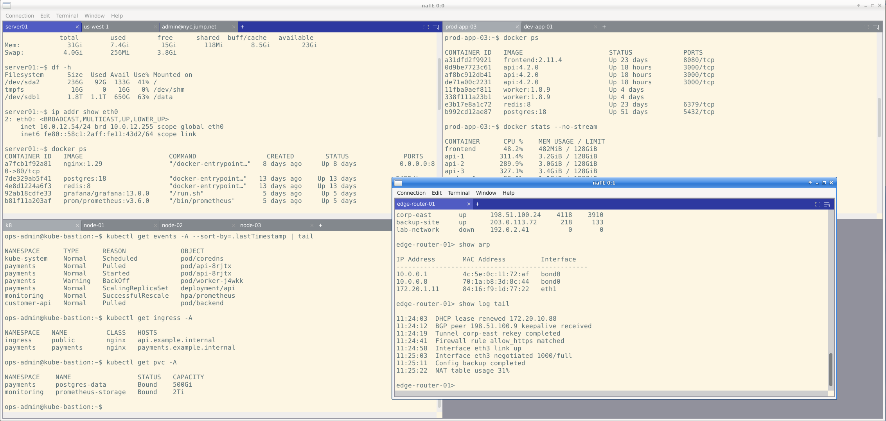

naTE
not another Terminal Emulator — tiling layouts, SSH, and serial support built for engineers who live in remote sessions.
What is naTE?
naTE is a graphical terminal emulator built for people who live in SSH sessions. It gives you a tiling, tabbed interface where multiple terminals share a single window, remembers your sessions across restarts so you can pick up exactly where you left off, and ships with a full suite of SSH features — agent forwarding, X11 forwarding, ProxyJump, keyboard-interactive (MFA) auth, port forwarding, and SFTP file transfer — all without touching the command line.
If you manage remote servers, work with serial consoles, or just want a terminal that treats sessions as first-class objects rather than throwaway windows, naTE is built for you.

Feature Highlights
Tiling & Tabs
Multiple terminals in a single window arranged in a grid. Drag tabs between tiles or windows. Broadcast to all sessions at once.
Full SSH Suite
Password, key, agent, and keyboard-interactive auth. ProxyJump, X11 forwarding, agent forwarding, port forwarding, and SFTP.
Session Restore
Auto-saves your layout so you can reopen exactly where you left off. Named workspaces for switching between projects.
Serial Consoles
Connect to serial devices with configurable baud rate, parity, flow control, and optional dial scripts.
File Transfer & Remote Edit
SFTP uploads and downloads. Edit remote files in your local editor and save them back automatically.
Themeable
Built-in Solarized Dark/Light and xterm themes. Drop any base16 YAML theme into ~/.nate/themes/.
Scrollback Search
Search the full scrollback buffer instantly. All matches highlighted; navigate with F3 / Shift+F3.
Wide Column Mode
Decouple the shell's reported column width from the visible tile. Capture 1024-column output without truncation.
Supported Connection Types
| Transport | Description | Key Options |
|---|---|---|
| SSH SSH | Remote shell over SSH with the full authentication and tunnelling suite | Key/agent/password/MFA auth, ProxyJump, X11, agent forwarding, port forwarding |
| Local PTY PTY | Local shell using a pseudo-terminal (bash, zsh, fish, …) | Custom shell, working directory, env vars, env file, login shell |
| Serial Serial | Serial device connection for embedded systems, network gear, and modems | Baud rate, data/stop bits, parity, flow control, dial script |
A Quick Look
Here is the typical workflow in naTE:
- Press Shift+Ctrl+N to open a new connection — choose SSH, PTY, or Serial.
- Fill in host/credentials (or pick a saved profile) and click Connect.
- Open additional tabs in the same tile with Connection → New Connection in Tab.
- Add in a second tile with Terminal → Move to New Tile.
- Save your layout as a named workspace: Connection → Save Workspace As…
- Next launch, restore it from Connection → Open Workspace.
Tip: naTE auto-saves your session layout at a configurable interval so you are protected even if you forget to save a named workspace. Enable Auto-restore on launch in Edit → Preferences → Session.
System Requirements
| Platform | Status | Notes |
|---|---|---|
| Linux (x86_64) | ✅ Supported | AppImage or build from source |
| macOS | ⚠️ Experimental | Build from source; some features may differ |
| Windows | ❌ Not supported |